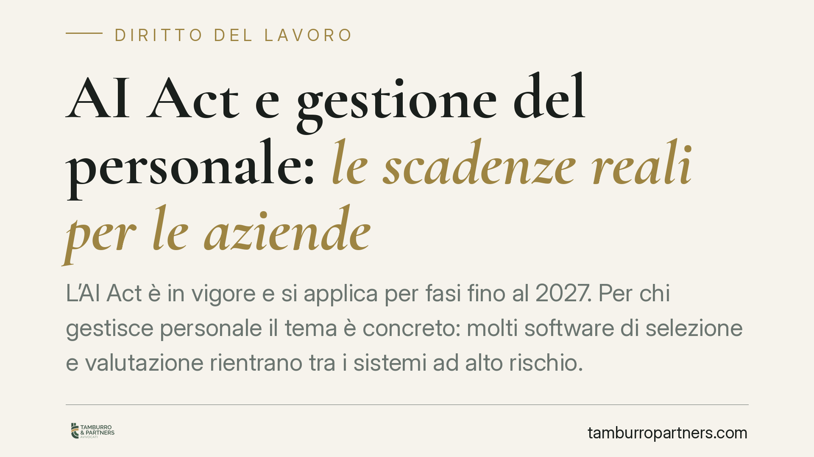

AI Act e gestione del personale: le scadenze reali per le aziende
L'AI Act è in vigore e si applica per fasi fino al 2027. Per chi gestisce personale il tema è concreto: molti software di selezione e valutazione rientrano tra i sistemi ad alto rischio. Vediamo le scadenze effettive del Regolamento, gli obblighi per aziende fornitrici e utilizzatrici e come muoversi senza improvvisare.

Il quadro normativo vigente
Il Regolamento (UE) 2024/1689, noto come AI Act, è entrato in vigore il 1° agosto 2024. La sua applicazione non è immediata ma scaglionata, secondo un calendario fissato dall'art. 113.
Le milestone principali sono queste. I divieti sulle pratiche di IA vietate (art. 5) si applicano dal 2 febbraio 2025. Gli obblighi sui modelli di IA per finalità generali (GPAI) e le regole su governance e sanzioni decorrono dal 2 agosto 2025. La gran parte delle disposizioni, inclusi gli obblighi sui sistemi ad alto rischio dell'Allegato III, si applica dal 2 agosto 2026. Un termine più lungo, al 2 agosto 2027, riguarda i sistemi ad alto rischio collegati a prodotti già soggetti a normativa di sicurezza dell'Unione.
Precisiamo un punto: alla data di redazione non risulta pubblicato un regolamento di modifica che "ridisegni" l'intero calendario spostandolo tra 2026 e 2028. Esistono proposte e un dibattito sulla semplificazione di alcuni adempimenti, ma allo stato le scadenze di riferimento restano quelle dell'art. 113 del Reg. 2024/1689. Chi pianifica deve basarsi sul testo vigente, non su iter ancora in discussione.
Perché riguarda proprio le aziende
L'AI Act distingue due ruoli centrali. Il *provider* (fornitore) è chi sviluppa o immette sul mercato un sistema di IA. Il *deployer* (utilizzatore) è chi lo impiega nella propria attività. La stessa azienda può essere l'uno o l'altro, con obblighi diversi.
Il nodo per chi gestisce personale è nell'Allegato III, punto 4, del Reg. 2024/1689. Vi rientrano i sistemi di IA destinati alla selezione e al reclutamento (ad esempio screening automatico dei CV o analisi dei colloqui) e quelli usati per decisioni su promozioni, cessazioni, assegnazione di mansioni o valutazione delle prestazioni. Questi sistemi sono qualificati come ad alto rischio.
La conseguenza è concreta. Un'azienda che adotta un software di recruiting basato su IA è un deployer di un sistema ad alto rischio. Deve quindi, tra l'altro, utilizzare il sistema secondo le istruzioni del fornitore, garantire la sorveglianza umana (art. 14), monitorarne il funzionamento e informare i lavoratori interessati prima della messa in uso, secondo l'art. 26, comma 7, che richiama anche gli obblighi verso i rappresentanti dei lavoratori previsti dal diritto dell'Unione e nazionale.
Il profilo contrattuale
Chi acquista o licenzia un sistema di IA destinato alla gestione HR deve trasferire sul fornitore responsabilità e garanzie adeguate. Il contratto di fornitura è lo strumento che regge la compliance a valle.
È opportuno inserire clausole che impegnino il provider a dichiarare la conformità del sistema all'AI Act, a fornire la documentazione tecnica e le istruzioni per l'uso previste dagli artt. 11 e 13, a garantire tracciabilità e log, e a cooperare in caso di controlli o incidenti. Vanno disciplinate le conseguenze del mancato adeguamento normativo nel tempo, compresi aggiornamenti e manleve.
Il lavoro mediante piattaforme
Sul fronte del lavoro digitale segnaliamo la Direttiva (UE) 2024/2831, relativa al miglioramento delle condizioni di lavoro mediante piattaforme digitali. La direttiva interviene anche sulla gestione algoritmica del rapporto di lavoro, con obblighi di trasparenza e di sorveglianza umana sulle decisioni automatizzate.
Trattandosi di direttiva, richiede recepimento nazionale: il termine va letto sul testo ufficiale e, trattandosi di norma UE non ancora attuata in Italia, le modalità applicative concrete dipenderanno dalla legge di recepimento. È un cantiere da monitorare, distinto e ulteriore rispetto all'AI Act.
Cosa fare in concreto
- Mappare i sistemi di IA già in uso o in fase di acquisto, individuando quali rientrano nell'Allegato III, punto 4, del Reg. 2024/1689.
- Qualificare il ruolo dell'azienda per ciascun sistema: provider o deployer, perché gli obblighi cambiano.
- Predisporre la sorveglianza umana e le procedure di informazione ai lavoratori e ai loro rappresentanti prima dell'adozione.
- Rivedere i contratti di fornitura inserendo clausole di conformità, documentazione, log e manleve sugli aggiornamenti normativi.
- Fissare un cronoprogramma interno ancorato alle scadenze reali dell'art. 113, con particolare attenzione al 2 agosto 2026.
Un'avvertenza sul metodo
Su un tema in rapida evoluzione, il rischio maggiore è pianificare su regole non ancora adottate. È consigliabile distinguere sempre il diritto vigente dalle proposte in discussione e verificare ogni scadenza sul testo ufficiale prima di assumere decisioni organizzative.
---
*Contributo informativo a cura di Tamburro & Partners - Avv. Giuseppe Tamburro. Non costituisce parere legale.*
Ogni storia di lavoro ha i suoi tempi.
Se gestisci HR e vuoi un confronto su contenzioso, ispezioni o licenziamenti, scrivi allo studio. Ti rispondiamo entro un giorno lavorativo.